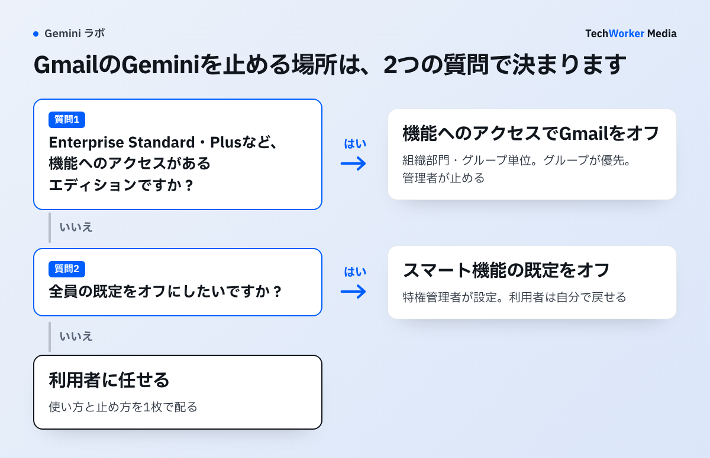
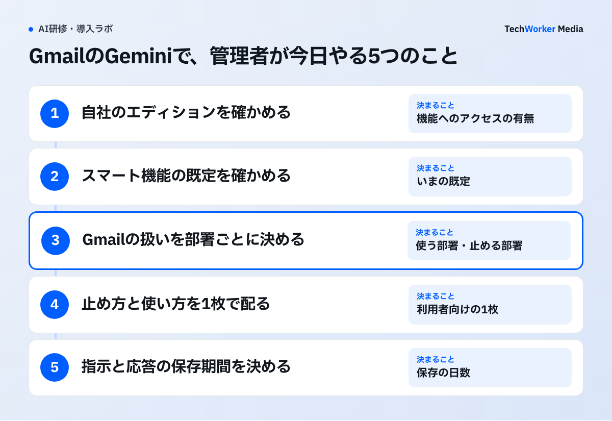

Gmailの長いスレッドの上に出る要約（AI Overview）と、メールの下書きを作るHelp me writeが、2026年11月10日から、18歳以上のすべてのWorkspace利用者へ順に広がっています。
- 既定でオン：利用者の側では最初からオンです。利用者は自分で止められます。管理者も止められると発表されていますが、止め方はエディションで違います。
- 日本の既定：どちらも、Gmailの「スマート機能」がオンの人だけが使えます。Googleは、日本に拠点があるドメインのスマート機能を既定でオフとしています。
- 管理者の止め方：Gmailだけを止める「機能へのアクセス」の対象に、管理者向けヘルプが挙げるのはEnterprise Standard・Plusなどです。Business系で確かめられた公式の手段は、スマート機能の既定を決めることです。
Google Workspace Updatesの発表と、管理者向け・利用者向けのヘルプ（2026年11月17日確認）をもとに、止める場所と社内の決まりをまとめます。
GmailのGeminiは、11月10日から何が変わりましたか？
要約とHelp me writeの2つが、一部のエディションだけでなく、18歳以上のすべてのWorkspace利用者に広がりました。利用者の側では既定でオンです。
Googleは2026年11月10日の発表で次のように書いています。
原文“These features will be ON by default and can be disabled by the user.”
日本語訳これらの機能は既定でオンになり、利用者が無効にできます。
同じ発表によると、広がるのは次の2つの機能です。
- 会話の要約（AI Overview）：長いメールのスレッドの上に、やり取りの要点と返信をまとめて表示します。
- Help me write：短い指示から、メールの下書きを作ったり、書いた文を整えたりします。発表では「パーソナライズなし（non-personalized）」と書かれています。一方でGmailのヘルプには、ほかのメールやドライブのファイルから詳細を取り込んで下書きを個別化する、という説明もあります。今回の版がどこまで参照するかは、確かめられていません。
これまでは、個人のアカウントと一部のエディションだけが使えました。即時リリースと計画的リリースのどちらの会社も、11月10日から最長15日かけて画面に出ます。
発表には管理者の設定の場所も料金も書かれていません。管理者がどこで止めるかは、発表からリンクされた管理者向けヘルプで確かめる必要があります。
日本の会社でも、全員の画面にすぐ出ますか？
出るのは、Gmailのスマート機能がオンの人だけです。日本に拠点があるドメインでは、スマート機能が既定でオフなので、何もしていない人には出ません。
発表は対象の利用者を「Gmailのスマート機能を有効にしている18歳以上の人」としています。スマート機能の既定について、管理者向けヘルプは次のように書いています。
原文“If your domain is based in the European Economic Area, Japan, Switzerland, or the UK, Workspace smart features and controls are turned off by default.”
日本語訳ドメインの拠点が欧州経済領域、日本、スイス、英国にある場合、Workspaceのスマート機能と設定は既定でオフです。
利用者向けのGmailのヘルプは、同じ既定オフを「日本に住んでいる人」と書いています。管理者向けはドメインの拠点、利用者向けは住んでいる国で書いており、判定の方法は公開されていません。
つまり、日本の会社では、Geminiの機能は既定でオンですが、使うのに要るスマート機能は既定でオフ、という組み合わせです。すでに管理者が既定をオンにした会社や、利用者が自分でオンにした人には、11月10日からの展開で表示されます。
| 機能 | 使うために要る設定 | 日本語 |
|---|---|---|
| 会話の要約（AI Overview） | 「Gmail、Chat、Meetのスマート機能」と「Google Workspaceのスマート機能」の両方がオン | 対応 |
| Help me write | Gmailのスマート機能がオン | 対応 |
出典：Google Workspace Updates（2026年11月10日）、Gmail ヘルプ「Catch up on email threads with AI Overview conversation summaries」「Supported languages for Google Workspace with Gemini」（2026年11月17日確認）
自社の利用者のスマート機能がいまオンかオフかは会社ごとに違います。管理者が既定を決めていても、利用者は自分の設定で変えられるため、管理コンソールの既定だけでは全員の状態は分かりません。
管理者は、どこで止められますか？
Enterprise Standard・Plusなどでは、Gemini for Workspaceの「機能へのアクセス」でGmailだけを止められます。Business系で確かめられた公式の手段は、スマート機能の既定を決めることで、利用者は自分で戻せます。
| 設定 | 使えるエディション | 管理コンソールの場所 | 単位と強さ |
|---|---|---|---|
| Gmailの Gemini をオフ | Enterprise Standard・Plus、Teaching and Learning アドオン、Education Plus、Google AI Pro for Education | メニュー ＞ 生成 AI ＞ Gemini for Workspace ＞ 機能へのアクセス | 組織部門と設定グループ。グループが優先。管理者が止める |
| スマート機能の既定 | ヘルプにエディションの限定の記載なし | メニュー ＞ アカウント ＞ アカウント設定 ＞ Smart features for Google Workspace | 特権管理者が設定。最大24時間。利用者が自分で戻せる |
出典：Google Workspace 管理者ヘルプ「Manage access to Gemini features in Workspace services」（2026年11月10日更新）、「Manage Google Workspace smart features for your users」（2026年11月10日更新）。いずれも2026年11月17日確認

「機能へのアクセス」を変えるには、Geminiの設定の管理者権限が要ります。Gmailのほか、カレンダー、ドライブ、ドキュメント、Meet、Chatなども、アプリごとにオンとオフを選べます。既定はオンです。
注意点が1つあります。管理者向けヘルプは、あるアプリでGeminiを止めても、ほかのアプリのGeminiからそのアプリのデータを使えると書いています。公式の例はドライブで、Gmailのデータが同じように扱われるかは書かれていません。Gmailを止めるときは、Geminiアプリとの連携の設定もあわせて確かめます。Geminiアプリ（gemini.google.com）の利用は、別の設定でオンとオフを決めます。
管理者向けヘルプの「機能へのアクセス」の対象エディションに、Business StarterからPlusは挙がっていません。Business系でGmailだけを止める公式の設定は、確かめた範囲では見つかりませんでした。スマート機能の既定はオフにできますが、利用者は自分でオンに戻せます。全員を確実に止める設定ではない点を、社内の決まりに書いておきます。
Geminiの各エディションの料金はGeminiの法人契約と料金にまとめています。主要4社の料金比較表と、社内利用ルールの雛形は、下の枠から受け取れます。
利用者は、自分で止められますか？
止められます。Gmailの設定の「全般」タブにあるスマート機能のチェックを外します。ただし、要約だけを止める専用のスイッチは見当たりません。
Gmailのヘルプによる手順は、次のとおりです。
- パソコンでGmailを開き、右上の設定から「すべての設定を表示」を選びます。
- 「全般」タブのスマート機能の欄で、「Turn on smart features in Gmail, Chat, and Meet」（Gmail、Chat、Meetのスマート機能）のチェックを外します。
- 同じ欄に「Google Workspace smart features」（Google Workspaceのスマート機能）の設定もあります。要約はこちらもオンのときだけ出ます。
設定は同じアカウントでログインしている全部の端末とアプリに反映されます。ただし同じヘルプには、パソコンで変えた設定の一部はスマートフォンのアプリに反映されない、とも書かれています。
要約のヘルプは、要約が不要ならスマート機能をオフにできるとしています。そのうえで、AIによる文章の作成や校正など、GmailとほかのWorkspaceのアプリの機能も止まると書いています。利用者に止め方を伝えるときは、この影響も一緒に伝えます。
メールの中身は、AIの学習に使われますか？
GoogleのPrivacy Hubは、対象のエディションのGeminiでは、許可なくドメインの外で人が確認したり、モデルの学習に使ったりしないと書いています。保存の期間は管理者が決めます。
「Generative AI in Google Workspace Privacy Hub」には、次の記載があります（2026年11月17日確認）。
- Geminiとのやり取りは組織の中にとどまり、許可なく組織の外へ共有しません。
- 内容はほかの顧客のために使われず、許可なくドメインの外で人が確認したり、生成AIのモデルの学習に使ったりしません。
- Gemini in Workspaceの指示と応答の保存期間は、管理者が決める90日から無期限です。
このPrivacy Hubは対象のエディションのWorkspaceでGeminiを使う場合に当てはまる、と書かれています。どのエディションが対象かは、自社の契約で確かめます。
スマート機能の説明のページには、スマート機能がオンのとき、データが機能の改善に使われることがあるという記載もあります。Privacy Hubとは別のページの記載です。どちらの約束が自社に当てはまるかは、情報システムの担当者が両方を読んで判断します。
社外から届いたメールを要約させる場面では、メールの中に機密の情報が含まれることもあります。Gmailの情報の扱いをDLPで決める方法は、AI DLPとはで扱っています。
社内の決まりとして、何を決めますか？
誰に使わせるか、要約と下書きをどこまで信じてよいか、止め方を誰が知っているかの3点を、決まりに書きます。
ここからはTechWorkerの提案です。公式の設定と制約から、社内の決まりに写す項目を5つ挙げます。
- 使える範囲：全社で使うか、試す部署だけにするかを決めます。Enterprise系は組織部門とグループで分け、Business系はスマート機能の既定と周知で分けます。
- 要約の扱い：要約は読む順番を決める手がかりとして使い、返信や判断の前には元のメールを開く、と決めます。
- 下書きの扱い：Help me writeの下書きは、送る前に必ず人が読み直します。宛先と添付も、送る人が確かめます。
- 止め方の周知：利用者が自分で止める手順と、止めると文章の作成や校正の機能も止まることを、1枚にまとめて配ります。
- 保存期間：Geminiの指示と応答を何日残すかを、管理者が決めて記録します。
Geminiの会社アカウントの設定全体は、Geminiの法人導入の記事にまとめています。11月9日から既定でオンになったスキルの設定は、Google Workspaceのスキルとはで扱いました。
今日、管理者は何をすればよいですか？
自社のエディションとスマート機能の既定を確かめ、Gmailの扱いを部署ごとに決めることから始めます。

- エディションを確かめる：管理コンソールに「機能へのアクセス」のパネルがあるかを見ます。
- スマート機能の既定を確かめる：アカウント設定の「Smart features for Google Workspace」で、既定の状態を見ます。
- 部署ごとに決める：Gmailで要約と下書きを使う部署と、止める部署を決めます。
- 1枚で配る：使い方の決まりと、利用者が自分で止める手順を配ります。
- 保存期間を決める：Geminiの指示と応答の保存期間を決めて記録します。
展開は11月10日から最長15日かけて進みます。日本の会社では、スマート機能をオンにしている人から順に表示が始まります。利用者から問い合わせが来る前に、決まりを1行でも出しておくのが安全だ、というのがTechWorkerの考えです。
よくある質問
2026年11月10日の公式の発表に、料金の記載はありません。対象はすべてのGoogle Workspaceの顧客の18歳以上の利用者と書かれています。エディションごとの料金はGeminiの法人契約の記事にまとめています。
使えます。Gmailのヘルプの対応言語の一覧に、要約（AI Overview）とHelp me writeのどちらにも日本語が載っています（2026年11月17日確認）。
利用者の設定では、要約だけを止める専用のスイッチは見当たりません。スマート機能をオフにすると要約は止まりますが、AIによる文章の作成や校正なども止まります。
そうとは限りません。管理者向けヘルプは、あるアプリでGeminiを止めても、ほかのアプリのGeminiからそのデータを使えると書いています（公式の例はドライブ）。Geminiアプリ（gemini.google.com）の利用は、別の設定で決めます。
2026年11月17日に確かめた管理者向けヘルプは、Gmailのような個別のアプリでGeminiを止める「機能へのアクセス」の対象に、Enterprise Standard・Plusと一部の教育向けのエディションを挙げています。Business系は挙がっていません。確かめられた公式の設定はスマート機能の既定で、利用者が自分で戻せます。
次の一歩は何から始めればよいですか？
管理コンソールで、エディションとスマート機能の既定の2つを確かめることから始めます。
- 管理コンソールで、「機能へのアクセス」のパネルの有無と、スマート機能の既定を確かめます。
- 要約と下書きを使う部署を決め、社内の決まりに要約と下書きの扱いを書きます。
- 利用者向けに、使い方と止め方の1枚を配ります。
TechWorkerではGeminiを含む生成AIの研修を、受講者の実際の業務1本から組みます。30日後に、使った人の割合と1件の時間を測って報告します。検討段階のご相談だけでも歓迎です。
出典と確認範囲
確認日：2026年11月17日。管理コンソールの画面と、要約と下書きの日本語での出来は、TechWorkerでは確かめていません。機能と提供の条件は変わるため、設定の時点で公式情報を確認してください。社内の決まりの5項目はTechWorkerの提案です。
- Google Workspace Updates「Expanding Gemini in Gmail to more Google Workspace users」（2026年11月10日）
- Google Workspace 管理者ヘルプ「Manage access to Gemini features in Workspace services」（2026年11月10日更新）
- Google Workspace 管理者ヘルプ「Manage Google Workspace smart features for your users」（2026年11月10日更新）
- Gmail ヘルプ「Learn about smart features & controls for Google Workspace & other Google products」
- Gmail ヘルプ「Catch up on email threads with AI Overview conversation summaries」
- Gmail ヘルプ「Supported languages for Google Workspace with Gemini」
- Google Workspace ヘルプ「Generative AI in Google Workspace Privacy Hub」